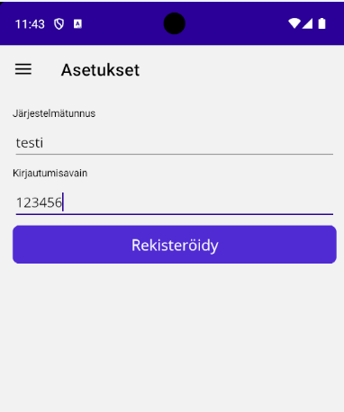
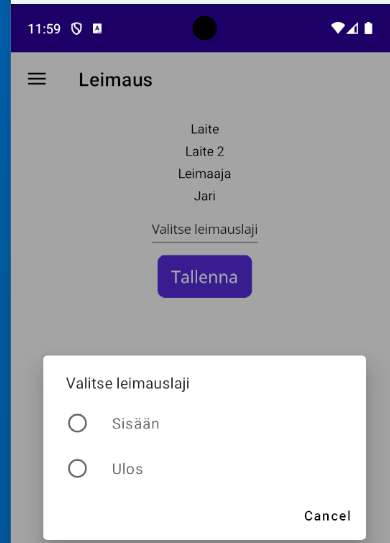

Leimaus
Leimaus sovelluksen käyttö edellyttää, että tunnukset on perustettu järjestelmään. Järjestelmään pitää perustaa laite, leimauslajit ja leimaajat.
Android-puhelinsovelluksen voi ladata tästä linkistä
Käyttöönotto
 Kun sovellus käynnistyy, se pyytää ensimmäisellä käyttökerralla kirjautumaan. Kirjautumisessa syötetään kaksi asiaa järjestemätunnus ja kirjautumisavain. Järjestelmätunnus on testiympäristössä "testi" ja tuotantoympäristään asiakasohtainen tunnus. Kun avaimet syötetään kirjautumisnäyttöön ja kirjautuminen onnistuu, näyttö vaihtuu leimausten syöttöön.
Leimaus
 Leimauslaite voi olla yhteiskäyttöinen tai henkilökohtainen. Yhteiskäyttöisessä laitteessa leimaajan täytyy syöttää leimaustilanteessa oma asiakkaan sisäisessä käytössä oleva tunnus. Leimausnäytössä leimaaja valitsee asiakkaan leimauslajeista haluamansa ja painaa Tallenna. Leimaustieto siirtyy tällöin järjestelmään sisältäen leimauslaitteen tiedot, leimaajan tiedot ja ajan.